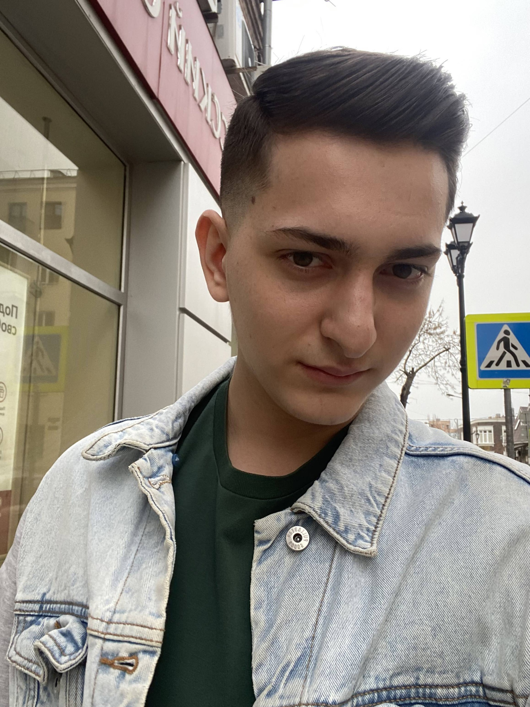

| Цель | Получение должности: Web-разработчик. Желаемый уровень заработной платы: 50000 руб |
| Опыт работы | ООО "Бел Ар" Дата:18.09.2022 Должность:Сис-админ |
| Образование | Федарльное государственное бюджетное образовательное учреждение высшего образования "Донской государственный технический университет» Дата окончания:18.09.2020 Формат обучения:Очное Специальность: Web-ориентированные информационно-аналитические системы |
| Личные данные | Дата рождения: 07.05.2003 Семейное положение: холост |
| Дополнительная инфомация | Уровень английского языка-B2 Уверенный пользователь ПК: MS Office, 1C, Photoshop |
Владею HTML5, CSS3 + LESS, SVG, MVC, JS+jQuery, PHP+MySQL, Bootstrap. CMS: Wordpress(Основы), OpenCart(Основы).Разработка, доработка и сопровождение сайта и интернет-магазина.Доработка и поддержка сайтов.Верстка современного или переверстка существующего дизайна, исправление неполадок в верстке страниц и существующем исходном коде, внедрение и интеграция новых технологий.